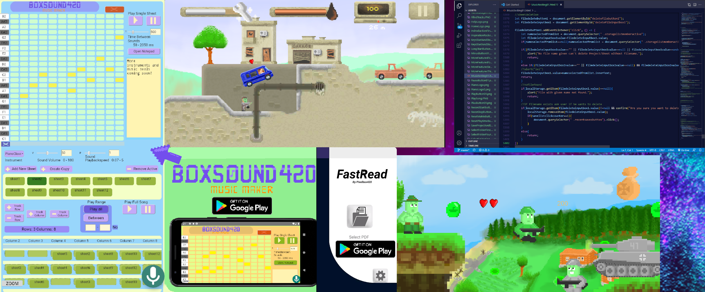
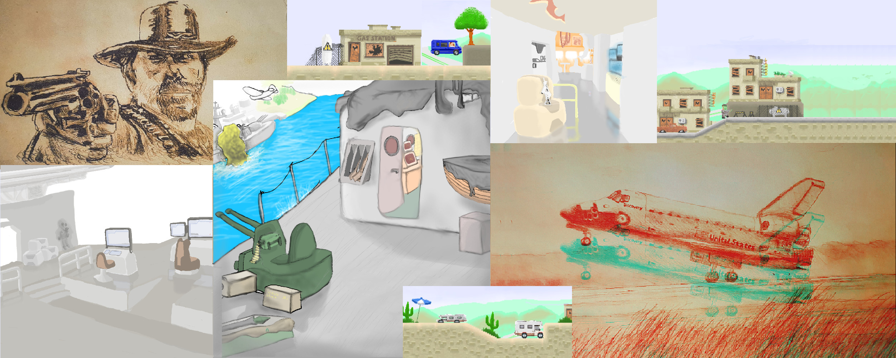
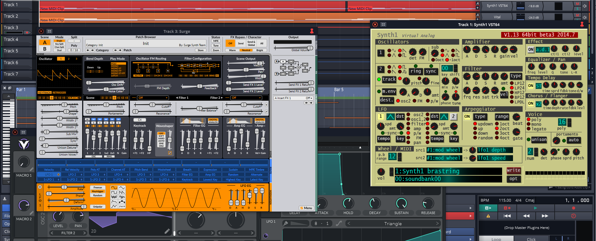
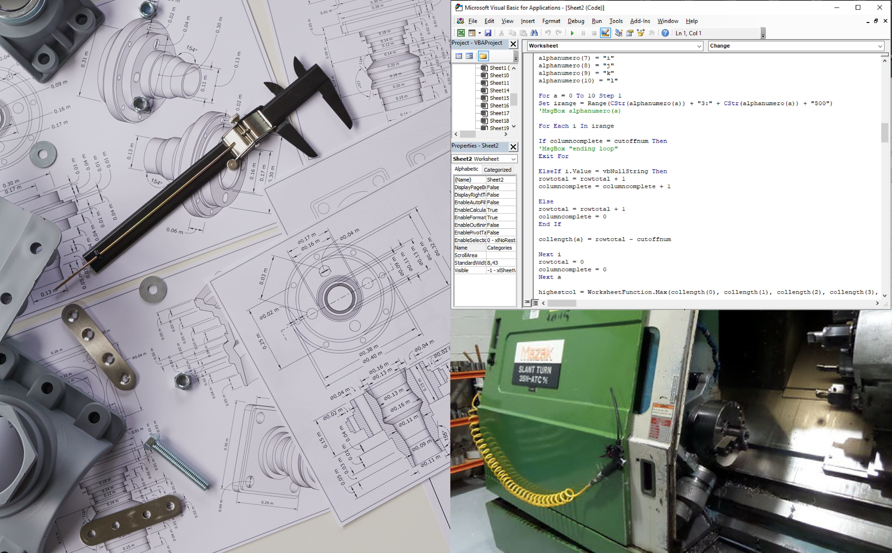
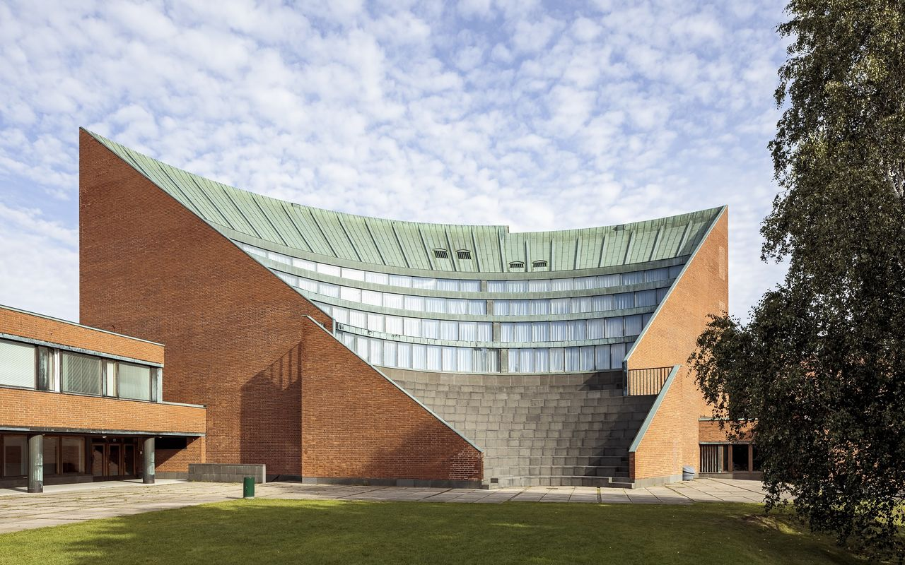

Who am I?
I'm an engineering student, programmer, 3d-artist, illustrator, musician and aspiring entreprenour from Finland. I have always dreamed of working at an innovative Silicon Valley startup. I'm facinated by tech, startups, math, physics, science, sowtware, lean, psychology and history.
.png)
Programming
I started programming at age 14. I can write programming and scripting languages like: python, html, css, javascript, java, xml, c#, Visual Basic and many others. I can also do some PLC-programming particulary using languages like ST and FBD using an environment like Codesys. I also have little bit of experience with node.js and opc ua.
I made a sheet based music app for android called BoxSound420. This app contains around 6000 lines of html, css and javascript and hundreds of lines of java and xml. I made the app in android studio but obviously Apache Cordova and React Native etc. could have also been used.
I also made a mobile app called FastRead that enables people to read PDF-books extremely fast because the words are presented individually on the screen, thus eliminating excess time spent on eye movement. This app was made using java and Android Studio.
I'm also working on couple games in the unity engine and my own new type of social media app. Stay tuned for more!
3d-art/modelling
I have extenssive experience using blender. I can create highly realistic textured objects and scenes that can be used in games, art, movies etc. I mostly get my textures from textures.com
I can also do complex modelling and simulations in cad programs like Solid Edge & keyshot, Creo Parametric, AutoCAD, etc. I can model parts, assemblies and design engineering blueprints.

Illustration
I have always been really good at understanding and drawing 3D-shapes and I taught people how to draw 3D-cars while I was at third grade. I can do realistic illustrations using paper or professional art programs like ibisPaint, Photoshop, Gimp and others.
Music
I have made a lot of my own music using Waveform 11 wich is a professional level music software. My favorite VST-plugins are Synth 1, Surge and Vital. I have also used tools like Caustic, Bosca Ceoili and my own music app BoxSound420.
Engineering and work experience
In the summer of 2022 I had an internship at Valmet flow laboratory where I conducted testing and reporting on the performance of valves and pneumatic actuators.
During my work I wrote a test program that reduced the theoretical testing time of one endurance test by 150 days.
I also made significant Visual Basic improvements to the workload input and workload analysis Excel-files used at Helsinki and Shanghai laboratories.
During my work I also developed an Excel VBA program for analyzing the average quarterly and annual project times, wich will help Valmet in their goal of reducing their average valve R&D project times by up to 20%.
I also spent two summers working at the Neles machine shop. During my work I mostly operated a Mazak lathe with mazatrol NC-control and Frömag broaching machine. I machined tough materials like acid resistant steel and spray coatings like NiBo (Nickel Boron) I also briefly used a Cazeneuve branded manual lathe for basic workpiece preparation work. The smallest tolerances were as low as 2μm
In the future I want to work in the US tech industry in Silicon Valley. (Please see see the contact button at the top of the page.) I want to work at an innovative silicon valley startup that aims to change the world and I want to build useful products and services for as many people as possible. Indeed, I consider helping people to be the most satisfying thing in the world. Because we are here only for so long it's the legacy that we leave behind that matters.
Studies
I'm majoring in mechanical- and minoring in electrical engineering at Aalto University in Espoo Finland. In the future I plan to learn more computer science, accounting and leadership.
Books & Mindset
I believe reading books is important and the best books are the ones we use for self developmet. I have read many books about Silicon Valley founders and believe building a strong mindset for the future is incredibly important - it ennables us to create an exciting new chapter for humanity. This Is what I call the theory of controlled influence.
Copyright © 2022 Elias Puolakka